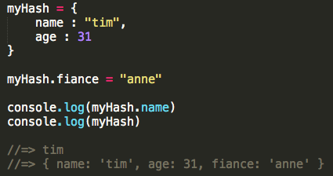

- student: DBC
- mkt mgr + product liaison: TRLA
- timcannady@gmail.com
- twitter.com/tcannadysf
- linked.com/in/timcannady
- github.com/timcannady
WebDev
Tech Grab Bag: ActiveRecord, Recursion, RegEx and Rails
A grab bag! That's what happens when asked to select just one topic from a list of many!
On one hand maybe it's best to do a deeper dive in one topic than skim a a few. On the other, I feel all these topics are important, and I don't really know anything about them. So an executive decision was made to do a high-high-level review of each. That way I'll at least know what I'm getting into when we get into them. And perhaps this can be of value to others who are at a similar level.
ActiveRecord
I began with knowing nothing about AR. I only chose it because I've seen the name a few times. And I remember having a feeling of, "this sounds important."
ActiveRecord is what's called an ORM, or an Object-Relational Mapping. Its name refers to the Active Record Pattern identified by Martin Fowler. So it's kind of a program whose name shares likelihood with an industry theory, if that makes sense. It's also the "M" in MVC, being Model-Control-Viewer - something I know is important but am yet to get learn about.
What does AR do? Quite a lot. And it's somewhat hard for me to understand all the benefits because I'm new to SQL and have never touched Rails - both of which AR works closely with. That said, I understand the parts where it does the translations between Ruby objects and their database. For example, let's say a website rents out DVDs and the owner wants to display the most recent. Assuming they're already listed in his database, he'd normally have to do a significant SQL query to sort-by release date and return the most recent. However with AR, all he has to do is something like: 'movie = Movie.last', where Movie is an object created using AR piggy-backed in Ruby (at least that's what it looked like).
This is possible because AR provides an object-oriented interface the database, making it much easier to interact with. And that's about it! When working with the database, "AR knows what you want, composes the SQL query for you, submits it, parses the output and puts in a handy Ruby object for you to use."
Recursion
I look forward to day when my reaction to recursion isn't, "ugh". What I've gathered is that it's hard for people to explain, it has something to do with the rapper Xzibit, and I'm not sure if it is best friends with closures, high-order functions and call-back functions. I honestly put them all in the same bucket until further inspection. Guilty until proven innocent.

I know a little more than that, and I should also know better than that. I bet recursion is an important tool. Otherwise the discussions wouldn't be so rampant. If it has haters, it means it's doing something right, right?
Enough Exzibit talk. Recursion is best broken into two ideas:
- In real life terms: recursion is the process of repeating items in a self-similar way. Like a hall of mirrors, a stack of Russian Dolls, or fractal art
- In programming terms: recursion uses this self-repeating theory and applies it to computer science. For example, imagine a function can calls itself
Below is an example in Ruby. Both methods output the n-th number in a Fibonacci Sequence. However the first approach uses recursion:

I only built fibonacciSequencer() but don't really understand what fibonacci() is doing. But I'll try to deduce at least one learning point: when I find myself doing something over and over to the input (in this example: "n"), then recursion might be the ticket.
RegEx
RegEx: that thing we're never allowed to use. Just kidding though. Well, sort of. There's something to be said for a tool that a lot of people say is best used in moderation.
'RegEx' is short for 'regular expression,' and is all about pattern-matching. It's typically used to search for something in a data set. For example, you might want to remove all the spaces in a string, remove the zeroes in an array, or convert exclamation points to double-exclamation points. So it's worth noting RegEx can search for any character type and is traditionally used to either search for, or update, the result.
I think the reason people suggest to use in moderation is because programs empower us with tools, for example loops and iterators, that are potentially better to use. At least academically speaking.
RegEx statements typically use delimiters like '/', so when you see something similar to /[a-w&&[^c-g]z]/, think RegEx.
Rails
I know more about Rails' gossip than I do about Rails itself. It's like I've read all the National Inquirer articles, but I've invited it for coffee. People just love to talk about it. Here's what the first couple results looked like when I Google'd 'ELI5 Ruby on Rails':
- Ruby is a language, Rails it the framework
- Rails is to Ruby as Django is to Python
- Rails' router is AWESOME via responders
- Rails is like Subway Sandwiches
Perhaps each of these replies is sufficient for a particular audience, but most of them don't help a beginner like me. Except the Subway one. That's the one that got me.
The Subway explains how Subway is for sandwiches as Rails is for Ruby. Subway offers "sandwich frameworks," being generally-accepted sandwich combinations. There's a bunch of different flavors and a couple of customization options, but in a world of endless possibilities, Subway distills the most popular. Here's how it relates to deploying web apps:
So it lays the groundwork for mundane things like generating HTML code, handling connections to databases and serving webpages. When thinking of 'a framework,' perhaps it's best to think 'a template.' But in this case it's a template for deploying the site/app itself, not a sandwich or an html document.
Culture
Values and combatting stereotype threat
Some argue the best way to combat 'stereotype threat' is by affirming the values that are important to us. Here's a look at some that are important to me and some ways I can apply them:
- Affection, Adventure, Challenge
- Close Relationships, Community, Courage
- Economic security, Environmentalism, Fairness
- Friendships, Honesty, Inner harmony
- Integrity, Introspection, Knowledge
- Leaderhip, Meaningful work, Music
- Nature, Personal deveopment, Reputation
- Romance, Security, Self-reliance,
- Spirituality, Wisdom
After reading list, I think it's safe to say one of my values is to have a lot of values...
It's hard to choose which are the most important. On a scale from one-to-five, I'd say I try to live up to most of these values by at least a three. The fives would probably be affection, adventure, close relationships, integrity, personal development and security.
Integrity is a big one. "Character is defined when no one is looking," and, "you make the bed you sleep in" are two quotes I keep in mind. To me, integrity means doing what's right because it's what's right. It's being a stand-up person, especially when faced with either adversity or with the chance to otherwise self-gain.

The last topic someone asked for my advice on is too sensitive for a blog post. However it was a deeply important decision in someone's life, and one that will likely affect them for many years. I was asked what I thought about the situation - what I might do. I told them, but I also stepped back and realized it wasn't so cut-and-dry. Rather, it was one of those decisions that needed to be decided by them. Not pragmatically, but quasi-spiritually. The reprocussions from the decision were such that they would have to live with the outcome, not me. Advice was positioned clearly as my own, and I also side-stepped the offer and reminded them that the decision was theirs to make.
When I think of my own values the result is that I feel good inside: a sense of calmness. Less in a proud-way, and more in a way that cuts through any lingerning fog that might be causing some cognitive dissonance. Just this simple practice of writing them down could be a great way to mitigate stereotype threat which can be fog in its own right.
To combat the threat I think one of the biggest steps is to first be able to recognize it. It can creep up slowly, so addressing it early on is important. Next, I think simply reminding oneself of their values is a clever start. Cut through the noise, remind yourself of where you're from and where you're going. Stereotypes are rarely founded in values. And while they carry a heavy weight, such threats should inevitably dwindle in the face of deep-rooted personal values.
JS v RB
JavaScript vs Ruby - Further Observations
Before DBC the most time I'd spent in any language was with JavaScript. I'd be hard-pressed to say, "it was my language," but it's the one I knew the most.
Changing to Ruby and now back to JS has been an interesting experience. I felt a mix of emotions when I first switched: like I was leaving an unfinished project, like I might forget the syntax due to non-use, like I might not understand Ruby as well as I had gotten along with JS.
I think each of these points is worth reflecting on separately, yet this is a technical post. So I'll just say that the roundabout trip has, in short, been a valuable one. I've seen similarities, differences, strengths and weaknesses (at least to a beginner's eye). I'll reflect on a few below, but when it comes to me personally, I'd now say the more languages, the better! Learning new ways to do things has made me a little more capable. And returning to a language that's missing that one cool trick helps me realize what's possible, albeit with a little extra work.
Now that I'm back in JS, I think there's two things that Ruby helped me understand better: Objects (eg Ruby's hash), and Classes.
Object vs Hash
Objects and hashes are both massively important features for these languages. A cryptic blog can't cover everything, but here's some initial comparisons:
- They have similar purposes: both are container objects, both are non-number indexed and both share companionship with number-indexed arrays. In short, they play a similar role in each language.
- They're accessed and updated similarly: both are easy to do so, albeit with a little change in syntax:

Here's two ways they're immediately different:
- Naming conventions: Ruby calls them "hashes" and JS calls them "objects". The latter feels a little funny since Ruby considers everything in the language to be an object. A minor pitfall for a beginner. Next, Ruby calls each item in the hash an "attribute", which is also known as a key. JavaScript refers to this as a "property." It feels like good practice to simply consider both to be keys with respective values.
- Iteration: I'm yet to spend much time working with JavaScript objects, but so far it feels like their iteration is a little more verbose than Ruby's for hashes - which is expected since Ruby is known for being succinct. Both are similar, though note the ability for Ruby to format the output (at least using this technique):


Classes
I think learining Ruby's classes helped clarify JavaScript's approach. Something about the use of 'this' took a while to click in my beginner brain. Here's how we define classes using each:

JavaScript and Ruby fill similar needs with Objects, Hashes and Classes. And familiarizing myself with both has given me more respct for them as they serve vital roles in housing all the data that we morph into awesome applications.
Think a hash's key-value pairs are as boring as brussels sprouts (with whom they share an odd likelihood)? I sort of did as well. At least until we were challenged to create a game using just a few objects as the foundation. It's pretty amazing what's possible when you start looking at things differently. For example, are the key-value pairs just integers and strings? Or are they names and hitpoints for wizards in a video game? X-Y coordinates for your hidden treasure? Datasets for your next infograph? Like a boring stalk, it's all about what you do with it!

Hang tight for my JavaScript game challenge - I'll be sure to post it to the new Projects section as soon as it's complete. In the meantime, here's a few more comparisons between JS and Ruby.
Culture
Don't Stereotype Me Bro
"Stereotype threat is a situational predicament in which people are or feel themselves to be at risk of confirming negative stereotypes about their social group." -Wikipedia: Stereotype Threat
With roots likely in race and gender topics, the idea of stereotype threat can theoretically be applied to numerous social structures. For example, why is the imposter syndrome so widespread in coding circles? Is it because programmers might create a divide between the elite and the lower class? Is it because programmers might be naturally hard on themselves? Is it because ranking someone's coding progress could be inherently difficult?
These questions are interesting to consider. However, I'd argue it can be more valuable to discuss the how's instead of the why's. How is it that using a stereotype, such as an 'imposter', can seal its own fate?

I don't mean to over-simplify a well-studied psychological phenomena. But I wonder if the effect could be wrapped up in something as simple as 'will power.' A journey towards an achievement doesn't begin with a first step. It begins with believeing the achievement is possible. If this is the case, then one must consider the implications of the opposite: when someone thinks they can't achieve something. Being told we can't, whether directly or through stereotype, should have the same effect on our mind as being told we can. Whether or not I think that's how things should be is for another time. But for now, I'd argue that what we're told, both positive and negative, carries significant weight when it comes to making up our own minds.
Being told we can't, whether directly or through stereotype, likely has the same effect on our mind as being told we can. Whether or not I think that's how things should be is for another time. But for now, I'd argue that what we're told, both positive and negative, carries significant weight when it comes to making up our own minds.
The reason I relate to the idea of imposter syndrome, and it's potential to fulfill its own prophecy, is because I've experienced it. And with little reseach, I've found I'm not alone. I could go into the deails of why, but I'd like to heed my own comments and just consider the how's. Why? Because I can't act on why's, and they'll likely lead down a path of self-pity. But if I consider the how's, then I can begin to understand the invisible force. How it works, how to respect it, and how to ensure it doesn't have control over me.
For now, my way of combatting it to only measure myself against myself. Armed with a growth mindset, I simply work on improving my education day-by-day. There will always be someone smarter than me, and I'm unaffected because they aren't my metric - I am. Mix that with an attainable goal, such as becoming a full-stack web developer, and I'm free to practice my trade unaffected by other's opinions. And, perhaps most importatntly, unaffected by impact that could have on my own potential.
Ruby
What's 'Variable Scope' ? And how does it relate to 'Self' ?
"...few elements mean the same thing everywhere. Integers, for example, mean what they mean wherever you see them. The same is true for keywords: you can't use keywords like "def" and "class" as variable names, so when you see them, you can easily glean what they're doing. But most elements depend on context for their meaning." -Well-Grounded Rubyist
When it comes to understanding scope and self, I think one of the most important parts of the quote is the use of 'context.' Let's dive in.
Scope
When it comes to a variable, scope has to do with whether or not it's visible to Ruby at a given stage in your program. An easy way to remember this is that a scope is used to see something; similar to a microscope or a telescope. The ability for Ruby to 'see' your variables is determined by where and how you use them. Context!
Here we define "x" as a top-level local variable. 'Top-level' basically means it exists outside of any other object (in theory an object at the top level belongs to the class "Object" with the name "main", but that's for later). In our example, "x" is a local variable because it only exists within the scope of where it was defined. In this case, that scope is the top-level:

To test this we create a method and try to print "x" from within, giving us the following error. Ruby understands that we're trying to print "x", but it can't see where it was originally defined. This is because the scope of local variables begins and ends: at the top level, at every class or module definition block, or every method definition block. It's the latter that triggered this scope change, being when we defined "my_method". So when the scope moves inside the method, Ruby can no longer see where "x" was defined:
Here we fix it by changing "x" from a local to a global variable. We do this by prepeding it with "$". Global variables have a global scope. This means Ruby can find them virtually anywhere in the program. Awesome, right? Sort of. Recall OOP principals urge our objects to, in some ways, be as weak as possible. 'Single-use' and lack of knowing other method's inner-workings are considered strong principals. So a variable that can be accessed from anywhere in the program is powerful yet should be used sparingly:

That's about it as far as scope goes. A variable's scope is determined by where it was defined and called. And scope changes three ways: at the top-level (default), at the begin/end of Class and Module definitions, and every method definition. Next, let's take a quick look at the idea of self.
Self
It feels a little more confusing, but it doesn't have to! The easiest way to begin is to recall everything in Ruby is an object. To ask, "which object is self?" is to ask "which object is Ruby currently looking at." That way, when we call a method, Ruby knows which item to look at.
There can only be one self at a time, so determining which object is self is as simple as recognizing which context our program is in:
- Top-level: when our program is at the top level, self is an instance of Object and is named "main":
- Top-level method: when your program is in a method at the top-level (meaning it is not, for example, inside a class), self is whichever object is self when the method is called. Keep in mind scope changes at every method definition, but this isn't necessarily the case for self. In our example, scope changes, but we notice self does not:
- Class-top: If your program is currently at the top level inside a class, self is the object you're currently in, being that class (the same goes for modules):
- Instance method inside a class: when in a method that resides in a class, self is the instance of the class. So if you have a class generator called "Calculator", and a new instance of it called "new_calc", then self is the instance, meaning the object "new_calc" (the same goes for modules). Don't quote me on this, but I think this could explain why "main" was the object in our earlier example:

To recap, scope and self share some similarities. Yet they have different implications - so much that they can be in differeing states at the same time. Being able to quickly identify scope and self are paramount when it comes to understanding yours and other people's code. Start with these basics and go from there!
I hope that helps, and if you want to learn more about scope and self I recommend Chapter 5 of the Well-Grounded Rubyist. And for some self in action, take a peek at my attempt to code'ify the contents of a silverware drawer. Note the use of self in the "sell_silverware" method of the "silverware" class. Can you tell what it's doing? If it's unclear, feel free to get in touch and we can chat.
Culture
Pair Programming and All Its Wonders
DBC emphasizes the importance of pair programming, and this is reflected in the syllabus: during the remote portion we pair three times a week. With sessions lasting up to two hours it's a pretty intimate experience. But coding is rarely done in a bubble, so it's important to get an early start on our ability to play with others.
Studies have shown companies who embrace pair programming reap the rewards. This means less bugs, higher-quality code and incrased job satisfaction. It also puts employees in positions where they can learn something new, and with an undertone of team-building and communitcation. It may come with an upfront cost, but whether your goal is to increase profitability or increase employee happiness, the benefits from a culture of pairing are ample. Here's some of my initial reflections on what it's been like learning how to pair - and all while learning how to code!
Pairing:
If I had to wrap up my so-far experience with pair programming, it would be "pretty darn cool." For some context, I'd consider myself an introvert. I also have a unique learning style. Some might call it "slow," but hey, it feels more "methodical" to me. It takes me an extra moment to get things, but when I do I'm pretty good to go. But mix those two things together and I was a little intimidated to share Sublime with someone else. And that's just the interpersonal stuff. What about when it comes to simply adding another brain to the mix? Two minds trying to solve the same problem, but perhaps in different ways? We all have different approaches.
I'm not sure if it's because DBC armed us with a diplomatic approach, but 100% of my pairing sessions have been notably mutual when it comes to everyone having a voice. This might be different after the honeymoon period wears off and I've spent days with the same people. But so far, so good.

What's been particularly rewarding is simply having another brain at the table. And in the case of DBC, it's a well-vetted brain when it comes to problem solving mixed interpersonal skills. When it comes to driving, I've felt confident my navigators were watching my steps and catching errors, and they were one step ahead of me when I was finishing writing code. As a navigator, I've enjoyed learning about other people's approach, feeling comfortable talking about who's idea is "better" or might make more sense. In the end, I think the Wikipedia article is right. It may take 15% longer to get a solution, but it's with less errors, and there's a good chance it's a stronger solution. We also both tended to learn something new, and in the rare case that one of us might have gone way down the wrong path, having a partner kind of puts on the bumper lanes and keeps things moving in the right direction, potentially making up for a lot more than 15% of the time.
Pair programming doesn't come without a share of frustrations. I'm yet to have anything noteworthy, but one time I felt a little left behind the driver. I'm a believer in each of the "benefits" listed in the intro, and one of them is the ability to learn from my partner. When I found myself left behind, it's kind of like, "well why am I here? I'm not helping and can't learn something like this." I take mutual responsibility for a situation like this and need to be confident to speak up. But that's one of the potential pitfalls. Another important part of pairing is giving and receiving feedback.
Feedback:
DBC stresses that good feedback should follow the "ASK" acronym: Actionable, Specific and Kind. Actionable means it suggests something they can work on. It's specific in that the person knows exacatly what you're talking about. And it's kind, which can be the most ambiguous. Some people think kind means nice, but alas, they're spelled differently for a reason. For me, kind really just mean's not rude. And even "rude" has it's on interpretations. But ASK-like feedback can be direct, and direct doesn't mean that something isn't kind.
I enjoy giving feedback. All of my sessions have been positive, so they typically begin with some specific, positive feedback. Then I get into some constructive feedback. I always try to be specific about the situation and how it made me feel. Then I offer actionable advice and follow up with the benefit it could bring. It's been a pretty helpful formula.
Receiving feedback is another story. It's easy to dish but not always easy to take! What's funny is we're all still fine-tuning our feedback-giving, so receiving can be quite a roller coaster. Some are just way too nice (it's possible!), and some are too direct. On that note, it's probably good to consider the medium by which feedback is given. In our case it's via a web forum, and we all know words on a screen can get lost in translation.

When I read the "proper" feedback, particularly the constructive portions, I feel a mixture of emotions. Judgement and belittled are a few. And sometimes I feel like it means I'm not doing well enough. Recall an earlier posts where I discussed the difference between "being good" versus simply always trying to get better. Sometimes when I receive constructive feedback I start drifting towards the wanting-to-be-good mindset, so any non-positive feedback can sting. However I have a new approach for this system. Before opening my feedback I remind myself a few things: that I'm at DBC because I want to get better at programming. Thus, I want to learn things and don't currently consider myself perfect. Thus it's obvious that I could use some adjustments! I remind myself that I'd prefer to have a 'growth mindset' and always be getting better, so any painful words only set me in the right direction. And finally, I remember the quote, "feedback is a gift." It truly is. No one has all the answers, so anytime we're lucky enough to receive feedback, it's best to embrace it.
In conclusion, pairing is great and feedback is great. I typically enter my pairing sessions with bit of intimidation and always leave feeling pretty excited. The biggest thing I'm going to work on for now is to be a little calmer during my sessions and on better listener. I've received three pieces of feedback that hint something along those lines: one said I was a little intense, one said I seemed flustered when I didn't understand something, and another said they weren't sure if what they were saying was coming across correctly. This is all news to me but definitely feels worth exploring!
Thanks for reading, and here's some further reading on pair programming via TechCrunch.
Classes
Understanding Ruby Classes
"Classes are super powerful, and I love them."
That should be how you feel when someone mentions classes in Ruby - that they're super powerful, and you love them!
Humans like things to make sense, and we go to some pretty big lengths to make sure they do! We explore, poke and prod. We create languages so we can make sense of our findings, and we create names so we can tell things apart. For example, humans and dog are both "things". They're both living things, and they're both mammals. And both like being pet.
Like comparing and contrasting two mammals, classes in Ruby allow us to create objects that come pre-packged with specific traits, including those they inherit - similar to how a dog and human inherit traits from the mammal 'class'. Let's take a closer look by creating a class together.
Let's say we run a website that specializes in music downloads. We'll need a way to categorize and organize the tunes. Classes to the rescue! We could create a generic object for each song, but guess what? Object.new is just creating a new object of the class Class . There's nothing generic about music, so let's learn how we can create a class called "Track". That way, we can call .new on it and have each song come pre-packaged with track-like attributes.
Here we define a class called Track. Our new class is empty, so let's give it a method called 'title' that takes no arguments and simply returns "I'm empty." After that we create a new instance of a track and name it 'new_track'. Then we call our new method on our new track. From our new Track class!
Here we give the class a method called 'initialize'. Initialize is a special method and is used when we want each instance of our class to be "initialized" with certain attributes upon creation. All songs need a title, so lets be sure every instance of Track is initialized with one. We asign 'title' equal to a funny looking variable called @title. Recall local variables disappear as soon as their method completes. We wouldn't want that to happen to our title attribute, so we use something called instance variable - all of which begin with the "@" symbol. That way it can be accessed from anywhere in the program - and at any time. Next, we define a method called 'info'. This will eventually output the track's info. We finish up by passing in a track name, "Song1", and then calling the info method on our new track:
A song should have more info than a title. We first expand the 'initialize' method to accept more arguments. Then we create individual methods so the user can read each attribute. We finish by creating a new track, passing in some info and then calling one of our methods on our new track:

That's all said and good, but it's a lot of work to make the user manually access each attribute. Let's add a method called 'info' that reads all the attributes in one go:

You might be intimidated by how quickly our class has grown. And all just to store a few attributes. Fear not, Ruby to the rescue. If you notice your class methods are doing one thing, it's likely that they're either "reading" or "writing". For example, our artist method simply "reads" its value to the user. In cases like these we can tidy things up by using 'attr_reader' and 'attr_writer'. Notice the single-task methods have been absorbed into the 'attr_reader' section at the top. The functionality is the same:
Ruby also rescues us from our single-use "write" statements. In this example we didn't create any methods to write with, but note at the bottom where we try to update the 'artist' variable from "Artist1" to "Artist2" and the error it returns. This is because we haven't taught our Track class how to accept this kind of update. Remember: a computer program does exactly what you teach it - and no more!
We address this by adding 'attr_reader' to the top. Alas, our attempt to "write" works. Ruby also offers another tool called 'attr_accessor'. Use this as a shortcut for attributes that you'll allow to be both reading and writing. I specifically use the term "allow" because the accessor tool might seem convenient, but it can cause headache - and even abuse - if not used sparingly:

With that we've learned how to:
- Define a new class
- Initialize each instance with attributes
- Define instance variables
- Define methods inside classes
- Create attribute readers, writers and accessors
- Create an instance of a custom object
- Call custom methods on it
This is just a basic overview of classes, akin to a song's title being a mere glance at the song itself. One major topic we didn't cover includes "inheritance", for example how our track might inherit from a parent class called 'Music', along with its methods to start/pause/stop. Another topic is how classes can share and communicate their attributes with one-another. Finally, and one of the most important, is how to "mixin Enumerable", which is how we can teach our classes to be enumerable. See my post here for a little more info on enumeration.
I hope this has been a helpful glimpse at the power of classes. For extra reading I recommended Chapter Three of The Well-Grounded Rubyist.
Culture
The Technological Land Grab
Websites have become surprisingly easy to build. The majority of humans are now online, and they can be reached with decreasing effort. Bootstrapping is sexy, funding is plenty and mobile boomed. Consequentially it's easier than ever to start a web-based company, and one of the side-effects appears to be a technological land grab.
I suppose there's nothing inherently wrong with a land grab - the idea that saying "I own a startup" is as generic as saying "I like steak." I'm all for the spirit of change, entrepreneurship, disruption and progress. But I can't help but feel a respectable portion of the boom is fueled by companies land grabbing for land grabbing-sake. Technological posers, of sort. And I don't really have any issues with posers either. It just seems that some of these companies could benefit from a look back at fundamental business practices.

So what's a "bonafied startup"? A company with a website? With an app? A responsive website? Founded by Stanford grads? Funded by Sand Hill? Funded by grandma? Built in San Francisco? I don't have the answers. But I think a start would be to have a sound, old-fashioned business plan. One that sizes a market, describes the (realistic) opportunity, analyzes the competition and all those other things taught in business school (that educational system that pre-dated MOOCs).
I used to work for Trulia, a real estate startup. At one time Trulia was the disruptor. During my tenure it grew about 10x (200 - 1,500 employees), quadrupled its UV's (~14m - ~60m), went public on the NYSE and was finally purchased by sworn enemy Zillow. I'm not sure if or when Trulia was no longer a startup. But if so, perhaps it was around the time when other disruptors entered the space. Some were successful and some fizzled out. The ones that succeeded typically had a business plan, among other things like smart founders, a great product and solid sales team. But the ones that fizzled out typically had something in common: they seemed to all be pet-projects of sorts. Again, nothing wrong with a pet project.
The observations at Trulia are just one example. The technological landgrab is prevalent: Will.i.am is a coder, HBO has the hit series Silicon Valley, "serial entrepreneur" is the new "CEO", and satirical websites like this almost seem real.
Pops said an observation without a fix is just a complaint, so here's some ideas. Do as you wish with your time and money (and try to do good by other people's time and money, too). But if you want to start a business, then start a business. I'd argue that a website isn't a business. Spending time on something doesn't make it a business. Sizing a market and saying "all we need is 3% to get rich" isn't a sound business plan. And save the C-level titles for companies with board members.
Want to make a business that's going to change the world? Or at least grab a significant portion of the market? Kudos to you, that's awesome. I think the best first step would be to Google "how to build a business," instead of "how to build a website." The prior is the end, and the latter is simply a means!
Enums
fun with enumerator methods: cycle - group_by - map
Let's take a peek at three enumerator methods. But first, a quick refresh of enumerators in general:
"An enumerator is a class which allows both internal and external iteration."
In other words, a class is considered "to be an enumerator" if it has a specific set of methods that allow for iteration. We're familiar with casses like Array and String being enuerable, but this is because they come bundled with built-in enumerable methods. Which methods, you ask? Mainly the ones that allow iteration. The most popular (as well as mandatory) is .each.
So enumerators are classes that can be iterated. Whether or not they can be iterated is up to the methods they contain. Popular classes come with them built in, but you can also make custom classes that are enumerable by adding include Enumerable during their initial definition. Now lets learn about some of the popular enumerable methods:
- .cycle
cycle cycles through your elements. Simple! For example, call cycle on an array, pass it a block to do something to each element of that array. It will do this. Forever. (remember to pass it an argument if you want it to just cycle n-times)

- .group_by
group_by groups your elements by whatever code you pass the block. Furthermore, it returns a hash. Stay with me here.
Another way of thinking of it is that group_by creates a hash and says, "any time there's a unique output from the block, we'll save it to a new key. For every element that resulted in that unique output, we'll assign it to that key's value in an array form. This way you can group all the elements together that would have the same output when passed to the block"
So the hash's keys come from the evaluated result passed to the block on each iteration. For example, if the block multiplys an input by three, the first key would become the output, and the next key would become the value from the next iteration. On the other hand, the hash's values are simply the value of the element that was used by the block. In other words, it's the value of each index being passed ot the block. Consequentially, the hash's value can have more than one value (in array-form), one for each value that results in the same output when passed to the block.
In the code below we call group_by on the range of numbers from one to six. Look to the block and we'll notice that for every index (every number in the range), we simply multiply it by three. We've done this plenty of times with .each. But the difference is the way the output is saved. In the case of group_by, the output is saved in a hash. We see the keys become the values the block evaluated to (3,6,9 etc). The values are each element that resulted in the value that we just assigned to the keys. For example, the first pair has a value of one. When we multiply the value of the first index by three, the output is three. So the key becomes three, and the value is 1 (the value that was passed ot the block):

- .map
map is a little easier to understand than group_by. The quickest way to understand map is to liken it to each. Recall that each does something to each element of the object it's called on, and it returns a new object. In other words, each isn't destructive. Map does just this but is destructive.

There's plenty of other enumerator methods to do all the tricks you need. Be sure to check out the Ruby Docs for more!
Culture
Thinking & Learning style - Fixed vs Growth mindset
The four groups and my results:
- Concrete Sequential: 40
- Abstract Random: 32
- Concrete Random: 24
- Abstract Sequential: 24
Concrete Sequential thinkers tend to be based in reality. They process information in an ordered, sequential, linear way.
During our next argument Im excited to let my fiance know that Im the one whos 'based in reality'. Just kidding though, we dont really argue.
Actually, sometimes we do. And perhaps its because I process information in an ordered, sequential way! I can be somewhat robotic when it comes to approaching things. While this might help when learning Ruby, it can be a double-edged sword when it comes to interpersonal skills. Humans are complex creatures. Sometimes it helps to approach things in an orderly fashion, for example when crafting the wedding budget. But other times, people just might want to vent, for example. When Im trying to learn why my fiance had a bad day, I need to keep in mind that I might not always understand it, and sometimes my way of offering support shouldnt be in an ordered, sequential manner. Just a pair of open ears and asking if theres anything I can do to help would usually suffice. Hopefully I can take advantage of this understanding during DBC. It's a beautiful thing that we all process (and teach) information differently. The better I understand my own methods, the better I can teach, and the better I can prep myself to receive.
On the topic of learning styles, theres also a school of thought that outlines two different "mindsets" when it comes to learning: fixed versus growth:
- Fixed mindset: ones ability is innate. Consequentially, someone with a fixed mindset is prone to proving he or she is better than someone else. This mindset is also prone to taking less risks because theyre a chance to have ones ability disproven. Dislikes feedback.
- Growth mindset: ability can be developed. Consequentially, someone with a growth mindset focuses on the process rather than the outcome. He or she is more likely to look to continually improve themselves because of their non-deterministic outlook. This type of mindset tends to be better at relationships because it doesnt look at others as competition. Values feedback.
I'd say this has been the biggest stuggle for me. How to get out of the idea that I might not be "good enough", like being good or not good is somehow a binary status. I've been combatting this by setting a goal of simply always getting better. For example, that quick 30 minutes of reading at lunch? I learned something new. That blog post from earlier? That's one more than yesterday. I learned something, I troubleshot, I got something done. Now I learn from it, reflect, put it behind me and make room for what's next. This mindset has relieved a lot of pressure while simultaneously putting wind in my sails. Afterall, I do enjoy coding! But sometimes we can be our own worst enemy, so consider doing some of the lessons. They can be pretty helpful when it comes to being more diplomatic with yourself when the times get tough!

HTML
CSS
CSS Positioning: Static, Absolute, Relative
Positioning things on a webpage is a little tricker than it looks. Chances are you've seen thousands of websites during your tenure as a professional internet surfer, and it's easy to forget the work that's taken place to grant you those experiences.
Take buildings, for example. Each day we see structures that took thousands of man-hours to complete. Land was purchased, permits obtained, land bulldozed and foundations poured. Architects designed the structure, and contractors built the framework before laying the wiring and painting the walls. Websites are created in a similar fashion, albeit with a digital medium. Similar to building a website, we've seen so many buildings that we might simply think, "that wall looks easy to move."
An HTML element is like a building's wall (or staircase, or any other physical feature), and moving them around isn't as simple as the drag of a mouse. One must understand how the element fits with the overall structure. Enter 'element positioning'. Sure, you can move it around like you can push a staircase around (stay with me here). But the element's borders are going to push things around, and a staircase is going to be difficult to scale if ends facing a wall.
Let's take a peek at some positioning basics for elements:
- Static: all elements are Static by default. This means they'll be positioned "wherever they should be when it comes to the normal document flow." Explaining the workings of the document flow is best saved for a discussion on what's called the "Box Model." Just know that the browser interprets the document top-to-bottom placing each element where it "should go" based on where the other elements are (EG: don't overlap). Also, you can't move an element around (EG left, right, top, bottom) if it has Static positioning. You must change the value first.
- Absolute: setting a position to Absolute can cause some confusion, but just know these two things: 1) An Absolute element defaults to the upper-left hand corner of the first parent element that has a positioning value of anything other than Static. Yes, a lot of words, but it's pretty simple. If you put a box with Absolute positioning within a series of other boxes-in-boxes, the Absolute box will align to the first box that has non-Static (non-default) positioning. Easy! 2) Setting positioning to Absolute removes the element from the normal document flow. Thus it can now overlap other elements, which can be good or bad depending on your goal. If you want your element to remain within the box it's currently in, you must set a width and heigh of the container or risk having the Absolute element overrun the borders. It's like the drawer I have for all my t-shirts. The drawer is way too small for all my shirts. If I set my drawer to Relative and my bundle of shirts to Absolute, the shirts would magically spill through the drawer's wall if I didn't also set the drawer's length and height to accommodate the larger bundle.
- Relative: here's a tip when thinking about Relative positioning: imagine you have a box. If you set the box's position to Relative, it puts it exactly where it should be (a'la Static positioning). BUT, you can then shift the element Relative to where it would normally land. Repeat: 'relative to where IT should be. It's almost like youre looking at a box and shifting a ghost of itself in one direction, but the original box remains behind. The reason we look at it like this is because of the implications how it has on the normal document flow and any other objects around it. I'm still not exactly clear on how it affects them, but just keep this in mind. For example, if you have a container div that won't collapse to fit the size of the text within, it might be because of this. I'll check back when I learn more!
Git
Git Reflection, AKA: "Stop, Collaborate and Listen!"
Imagine working in a Word document. When you're ready to store changes you click "Save" (Git calls this "commit"). But what happens if you want to return to a prior savepoint? This feature is typically unavailable for consumer programs, and this is where version control shines. When you're ready to "save" a file in Git, you "commit" the changes. It's akin to saving multiple copies of the same file at each milestone. Furthermore, Git's version control tracks helpful info like what changes were made and memos from the change'ee.
Life isn't a video game (so it seems). Consequentially we benefit from ways to cover our tracks should we fall into the proverbial crocodile-pit (for example a faulty line of code). Keeping track of changes is a way to create save points. Furthermore, this makes things easier for us to collaborate with others, and that means more changes to create awesome code! By tracking changes, new collaborators also get a better understanding of the history of our code, what each version does, etc,
- Why use GitHub to store your code?
DBC
Chef's Kicthen: DBC Refleciton, AKA: Development Isn't a Spectator Sport"
Today we watched a fireside chat recording with Shereef - DBC founder. As always, Shefeef's enthusiasm for building a strong, healthy and passionate coding environment is infectious. He describes the fist cohort, being a marauding group of youthful coders rallied via Hacker News. Something he recognized was their ability to work as a team. Something in the office is broken? Take the lead and fix it. People are hungry? Order food. It was a group of do'ers, and do they did. Shereef goes on to describe how important this mentality is with DBC and with learning any new skill. Treat DBC as if you're a cook in a kitchen, as if you're one of many on a soccer team. If something needs to get done, do it. If someone is struggling, help them. If you aren't understanding something, go out there and try to undestand it. Don't look at your education as something you purchase. It's not a package, it's not a service. It's an interactive experience, and your role isn't to just watch. Showing up doesn't mean showing up physically. It means showing up emotionally, intelligently, empathetically.
So far my take on the DBC expericence is better than I expected. Well, I suppose it's been all I was hoping for, and that's something I don't take for granted. The curriculum isn't too easy, and it isn't too hard. I trust I'll eat my words in a few weeks and consider these early weeks to have been cakewalk. But the introduction has been a nice pace. I can tell a lot of work went into our syllabus. I like the repetion, the immersion, the teaching-by-doing. In the past I've tried to learn CLI and Git. I'm finding that it's finally just now sticking, and that's exciting.
I'm also really enjoying how active my 'cohorts' have been on Google+. People don't seem to be afraid to reach out and to help out. I've felt comfortable seeking help as well. A few times I began asking something that was stumping me, but I decided to try just one more time before "bugging" other people's inboxes. I know I shouldn't look at it like that. And I don't really. But I think it's encouraging to know people are there to help, but in the end, this is my education, my playground. I need to struggle, to know when to keep looking, and to know when to ask for help.
My end-of-week reflection is that I'm liking how things are going. I think I fall in the "imposter" category and need to keep that in mind. That said, I'm finding myself stepping up to the plate. And what's exciting to me is that I'm finding myself overcoming little bugs, issues, mis-steps. Instead of moving on and skipping over something if it's not working or doesn't make sense, I'm finding myself really curious to fix it/understand it before moving on. That said, I need to be cognisant of the time. I hear it's only going to get more rigorous going forward. I'd like to be done with my work by Friday evening, saving bonus work for the weekend. This means time management, and this means mind-management. I'm working on getting into my zone quicker. On the flip side, I'm working on being ok with working out of my zone. That say I can take advantage of the quick 30-minute window before dinner is ready, for example.